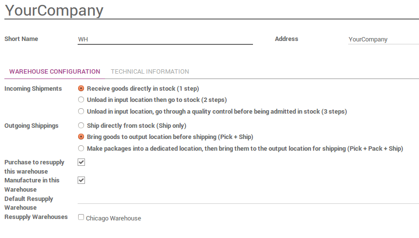

概述
当订单走到发货部门做最后的发货时，默认的YuanCloud会使用**一步**操作：当货物都准备好了，就可以只通过一张发货单就能发货。但是，根据公司的业务流程，可能在发货之前炫耀更多的步骤。在**两步**过程中，货物在仓库中先被**拣货**并且发到**出货区域**来**发货**。然后货物才被发货。
为了在YuanCloud中完成**拣货＋发货**的交货，需要进行必要的配置。这些步骤创建额外的库位，默认的称之为 Output。所以如果你的擦国库的简称是``WH``，配置就会创建一个称为``WH/Output``的库位。产品首先第一步(拣货)从``WH/Stock`` 移动到 WH/Output`，然后，第二步(发货)从``WH/Output 移动到 WH/Customers (如果有销售订单)。
注解
检查：文档：[UNKNOWN NODE problematic]仓库流程`确认该仓库流程是否是需要的正确的方法。
配置
允许管理路径
YuanCloud通过**路线**配置交货单的移动。路线提供了不同动作汇集成链的机制。在该中状况下，我们可以把拣货步骤和发货步骤链接起来。
要路径管理，进入菜单项 。
确保选择了无线电按钮**产品使用规则的高级路径**。
在页面上方点击**应用**保存变更(如果需要检查上方的无线电按钮)。
注解
如果你选择了**产品的高级路径规则**，如果没有激活**仓库多位置管理**的特性，那么现在就激活它。
配置仓库为拣货＋发货
配置一个 拣货(Pick)＋发货(Ship) 的调拨，进入菜单项 然后编辑需要使用的仓库。
对于出库设置，设置为**发货之前先把货物发到出货区域(拣货＋发货)**
创建销售订单
安装**销售**模块并创建需要产品发货的销售订单。
注意现在我们可以看到该销售订单上方的**发货**状态按钮有2张调拨单关联
如果你选择了**2步转移**，现在你应该看到两个不同的调拨，一个以**PICK**开头，用来处理拣货过程，另外一个以**OUT**开头用来处理发货过程。

处理发货
如何处理拣货这一步骤？
确保有足够的产品在库存中，然后进入**存货**并点击看板卡片上**调拨单**下方的**等待**链接

点击你想要处理的调拨单
如果可用，点击**预留**预留产品
点击确认计算从**仓库／库存**到**仓库／发货区域**的调拨单。
这样已经完成了拣货步骤并且**WH/拣货**调拨单页面上方的状态栏位已经显示为**完成**。产品已经完成了从**WH/库存** 到 [UNKNOWN NODE problematic]WH/出货区**的调拨。这样产品就**下一步操作就绪**(发货)。
如何处理发货这一步骤？
进入**存货**点击看板卡上**发货单**下方的**# 待做**链接。

点击你想要处理的调拨单
点击**确认**去完成从**库存／出货区**到客户的调拨(点击**申请**填写基于**待做**列表中的数量)
这样已经完成了发货步骤并且**发货单**的调拨已经在页面上方状态栏位显示**完成**。产品已经发给客户。